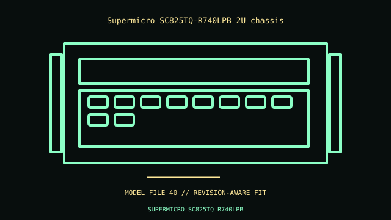

[ IDENTIFIED ENCLOSURE // RACK SERVER ENCLOSURES ]
Supermicro SC825TQ-R740LPB 2U chassis
2U; approximately 89 × 437 × 647 mm H×W×D without rail extension. E-ATX/ATX board within chassis/rear-I/O limits; matched 2U riser, power distribution and fan wall.

VARIANT / ARCHIVAL CAVEAT: TQ-R740LPB differs from R700LPB and expander variants. TQ is direct-attach; check fan/PSU airflow class and CPU TDP.
Mechanical specifications and fit
| Catalog identity / revision | Supermicro SC825TQ-R740LPB 2U chassis |
|---|---|
| Dimensions / construction | 2U; approximately 89 × 437 × 647 mm H×W×D without rail extension. |
| Drive bays / storage | Eight hot-swap 3.5-inch bays on TQ direct-attach backplane; 740 W redundant low-noise PSU. |
| Board, system and compatibility | E-ATX/ATX board within chassis/rear-I/O limits; matched 2U riser, power distribution and fan wall. |
| Revision / service note | TQ-R740LPB differs from R700LPB and expander variants. TQ is direct-attach; check fan/PSU airflow class and CPU TDP. |
Preservation and installation notes
Match the chassis PID/service tag to the backplane, drive carriers, risers, fan modules, PSU units and rail kit; same-family servers often have incompatible option cages.
- Photograph the complete model label, assembly revision and option identifiers before opening; keep matching covers, brackets, shields, trays and fasteners together.
- Confirm rack depth, rail travel, cable-management clearance and host/HBA support before installation; hot-swap bay count alone does not identify backplane compatibility.
Manufacturer manuals and model-specific sources
- Supermicro SC825TQ-R740LPB 2U chassis manufacturer specifications / product referenceModel-specific manufacturer specification, owner/service manual or technical reference; verify exact model and revision.
- Supermicro SC825TQ-R740LPB 2U chassis manual and service documentationModel-specific manufacturer specification, owner/service manual or technical reference; verify exact model and revision.
Where normalized dimensions or option-specific limits are not published, the record states that limitation rather than asserting a generic fit. Verify the cited manual revision against the specimen.